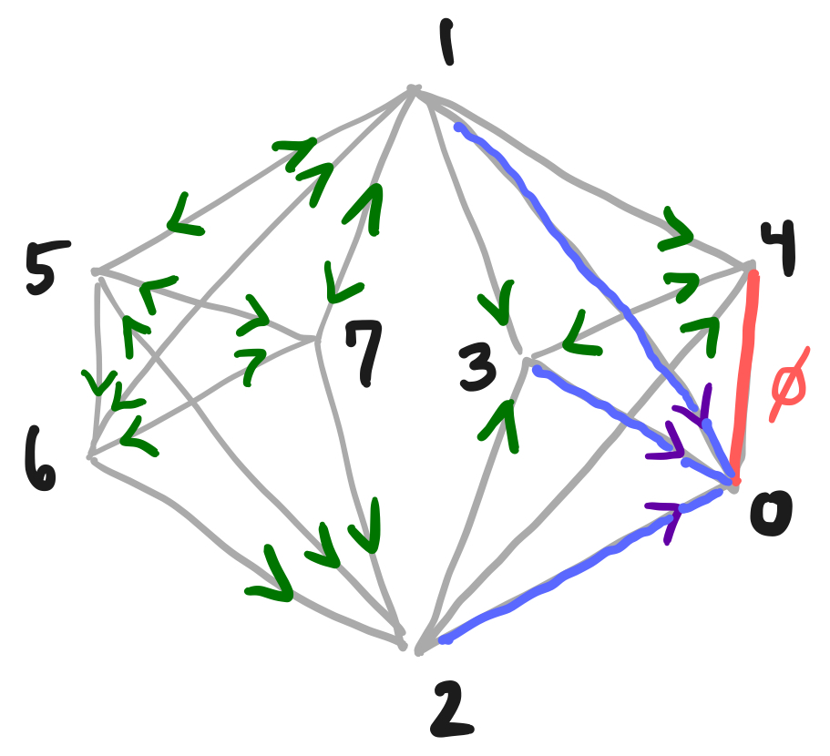

The main results, a new algebraic proof that 1-extension preserves generic rigidity of bar-joint frameworks, are formalized in Lean 4 with an archived artifact.
Abstract
We give a new proof that 1-extension preserves generic local rigidity of bar-joint frameworks in all dimensions. The proof does not use a special position argument, which makes the approach potentially useful for X-replacement in 3-space. Instead, the balancing conditions recently introduced by the first author use directed paths in the line graph, and by modifying the end of these paths, we transfer a self-stress on the 1-extended graph back to the original. Treating the new vertex as variable allows us to extract the balancing condition of the smaller graph as one coefficient of a homogeneous quadratic. A Lean 4 formalization of the main results accompanies the paper.
Problem
1-extension (Henneberg type II) preserves generic local rigidity of bar-joint frameworks in all dimensions. Standard proofs rely on a special-position argument that does not generalize to X-replacement in 3-space, where the relevant lines do not generically intersect.
Approach
The proof uses balancing conditions defined by directed paths in an oriented line graph. Modifying path endings transfers a self-stress on the 1-extended graph back to the original graph. The new vertex is treated as a variable, so the smaller graph's balancing condition appears as one coefficient of a homogeneous quadratic. Weak d-orientations, which allow degree-d vertices, are introduced, and the main results are formalized in Lean 4.

Figure 1. Left: Illustration of \Gamma for Example 1 . Right: Paths in \mathcal{L} adjusted to \mathcal{L}^{\prime} .
Results
The paper gives a special-position-free proof that 1-extension preserves generic rigidity for all d >= 2. A Lean 4 formalization of the main results is archived alongside the paper.